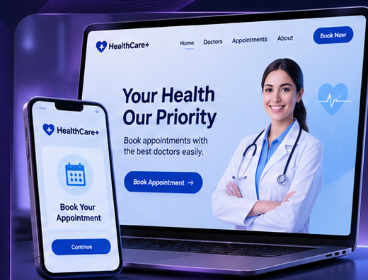

Doctor Appointment App
A mobile application concept designed to make finding doctors and booking medical appointments easier and more convenient.

Project Overview
The application allows users to browse medical specialties, view available doctors, and manage their appointments through a simple interface.
Main Features
- Browse medical specialties.
- View lists of doctors.
- Explore doctor information.
- Navigate between application screens.
- Manage appointment-related interactions.
Project Goals
To create a user-friendly mobile experience that simplifies access to doctors and medical services.
Technologies Used
Flutter | Dart
← Back to Home